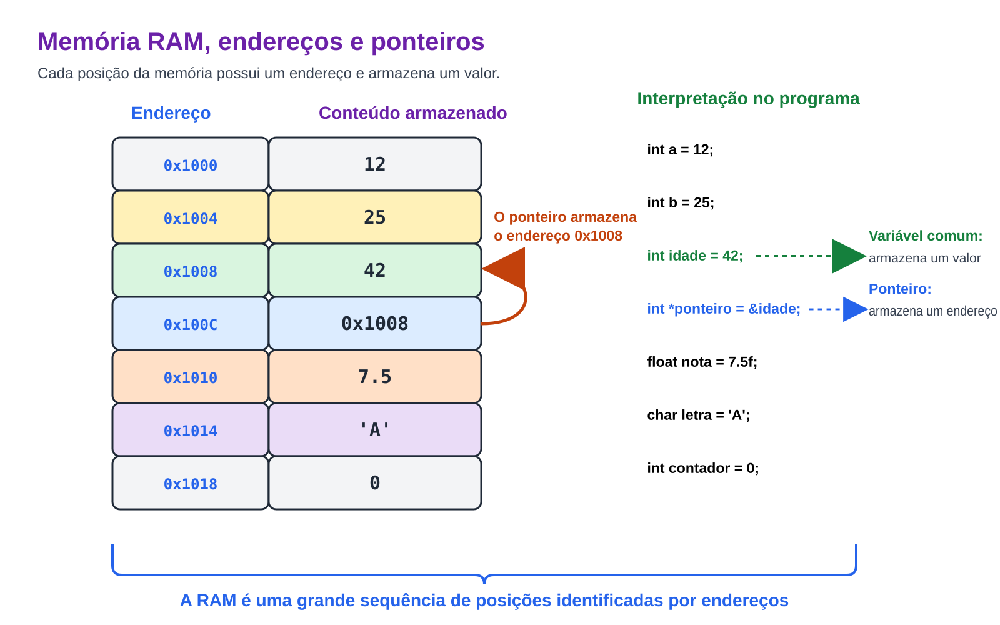
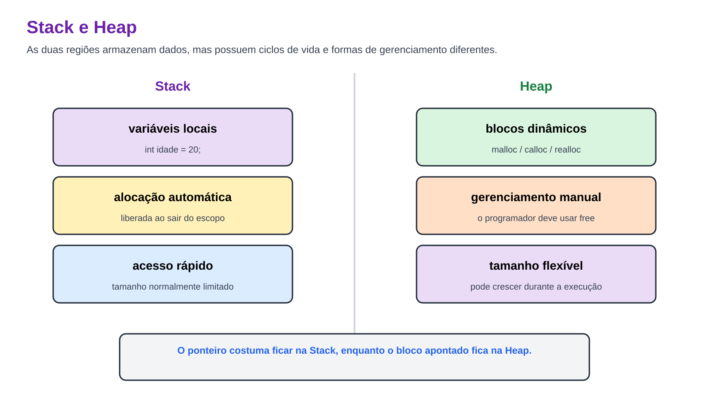
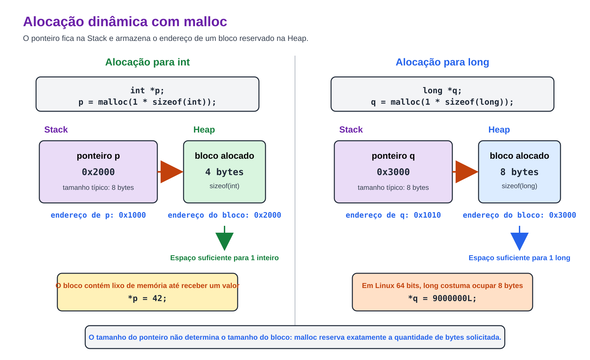
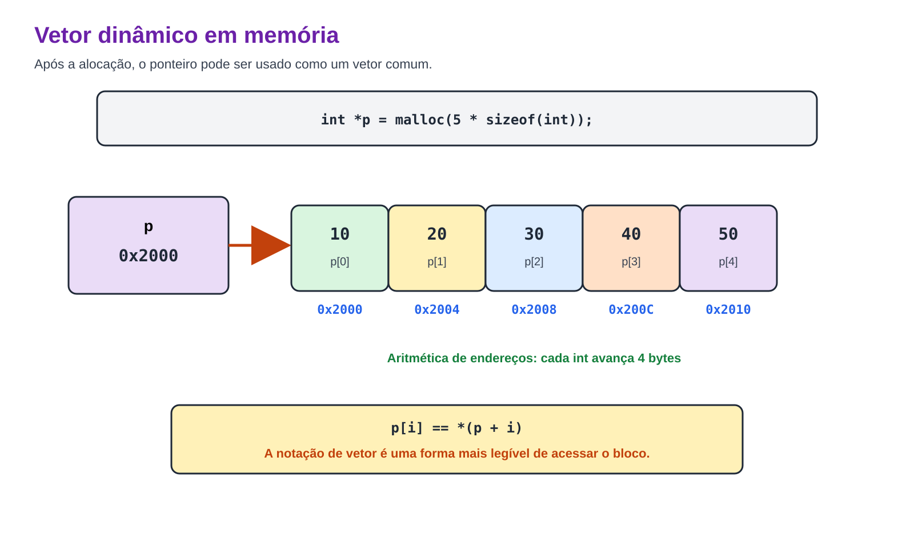
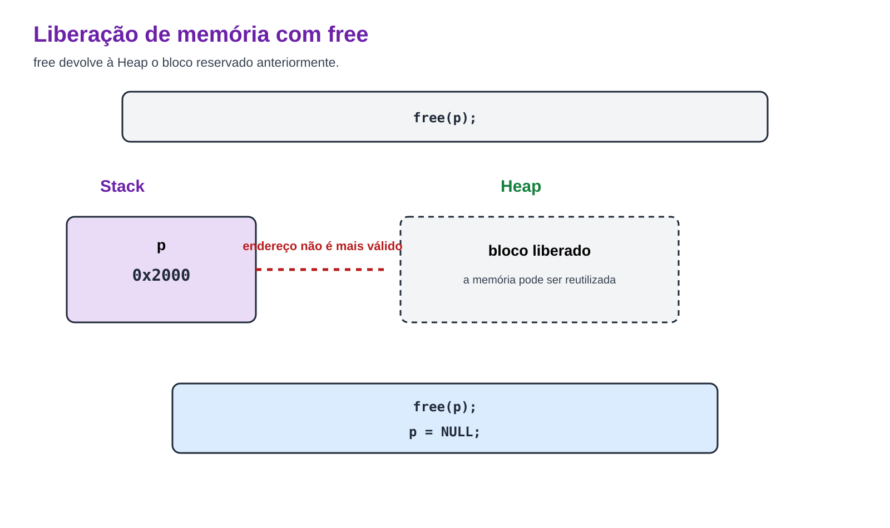
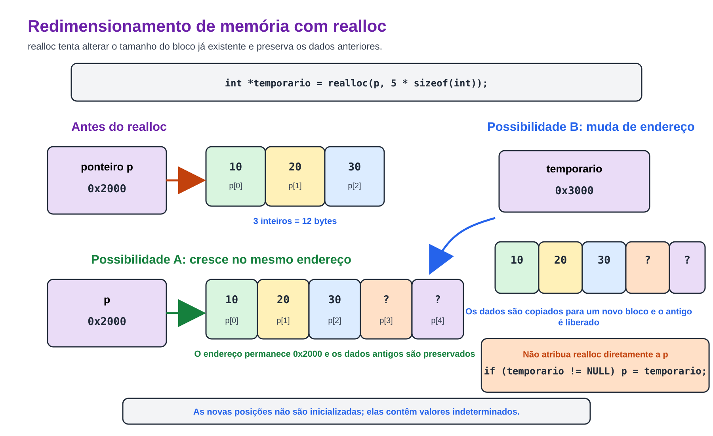

Prof. Me. Gustavo Ferreira Palma
Ponteiros - Conceito
- Toda variável declarada em um programa ocupa uma ou mais posições na memória. Essas posições são
identificadas por endereços, que funcionam como "coordenadas" utilizadas pelo processador para localizar os
dados.
- Um ponteiro é uma variável cujo conteúdo não é um valor comum, mas sim o endereço de memória de outra
variável.
Ponteiros - Conceito
- Por que utilizar ponteiros?
- Compartilhar dados entre diferentes funções.
- Evitar cópias desnecessárias.
- Criar estruturas de tamanho variável.
- Manipular memória dinamicamente.
- Implementar estruturas de dados como listas, filas e árvores.
- Desenvolver bibliotecas genéricas.
Ponteiros - Conceito

Ponteiros - Conceito
- Uma das principais ideias ao utilizar ponteiros é evitar a duplicação de valores;
- o que evita problemas ao usar recursos escassos, como por exemplo um arquivo, um socket ou uma porta
serial por exemplo;
- Além disso, ainda podemos tornar o programa mais dinâmico e otimizado, através da alocação dinâmica,
podemos ter vetores de tamanhos específicos, que podem se expandir ou encolher, conforme a demanda;
- Além disso, podemos inclusive usar ponteiros para armazenar funções;
Ponteiros - Conceito

Ponteiros - Declaração
- Antes de falarmos explicitamente sobre a declaração de ponteiros, devemos falar dos operadores
principais para o trabalho com ponteiros;
- O operador * Acessa o valor, o conteúdo apontado pelo endereço do ponteiro
- O operador & Acessa o endereço de uma variável em memória
int main() {
int *p = NULL;
}
- Esse é o modo mais 'Seguro' para declaração de um ponteiro, pois garante que ele aponte para um endereço
nulo (NULL);
Ponteiros - Declaração
- Também é possível, declarar um ponteiro 'apontando' para uma variável específica, para assim tentar evitar
a duplicação de valores
int main() {
int x = 10;
//dessa forma indicamos que o ponteiro P, aponta para o endereço da variável 'x'
int *p = &x;
}
- Dessa forma toda operação executada com '*p', irá refletir no valor armazenado na variável 'x', pois ambas
referenciam o mesmo endereço de memória
Ponteiros - Inicialização
- Ao utilizarmos a declaração int *p = NULL;, não podemos fazer qualquer operação ou acesso ao ponteiro, sem
antes inicializa-lo devidamente.
- Isso pode causar um comportamento inesperado no programa, ou mesmo 'quebrá-lo', causando um problema na
usabilidade e estabilidade do programa.
- A função 'malloc', deve ser utilizada pra incializar o ponteiro antes do uso;
#include <stdlib.h> //Necessário para a função 'malloc'
int main() {
int *p = NULL;
p = malloc(1 * sizeof(int)); // Aloca o ponteiro p para uma posição do tamanho do inteiro
if (p == NULL)
{
printf("Erro de alocação\n");
return 1;
}
return 0;
}
Ponteiros - Inicialização

Ponteiros - Inicialização
- Além da função 'malloc', para incializar ponteiros, podemos utilizar a função 'calloc'.
- A função 'calloc', essencialmente faz o mesmo que a função 'malloc', contudo, enquanto a função 'malloc',
apenas aloca a memória incializando o ponteiro, a funcão 'calloc' aloca a memória e inicializa cada uma das
posições com o valor 0
int main(){
int *vetor = calloc(10, sizeof(int));
}
Ponteiros - Incialização de vetores Dinâmicos
- Assim como anteriormente alocamos um ponteiro para uma posição int, podemos alocar um ponteiro para 'N'
posições de um inteiro por exemplo.
int main() {
int *p = NULL;
int n = 0;
printf("Insira o número de posições desejadas:\n")
scanf("%d",&n);
p = malloc(n * sizeof(int)); // Aloca o ponteiro p para n posições do tamanho do inteiro
}
- Cada posição do ponteiro representa um número diferente.
Ponteiros - Incialização de vetores Dinâmicos

Ponteiros - Deinicialização
- Diferente das outras variáveis, quando alocamos um vetor com 'malloc', somos obrigados a liberar a
memória, do contrário isso vai gerar o que chamamos de memory-leak
- Na prática, o memory-leak,é de fato um 'vazamento' de memória, é um endereço ou uma faixa de
endereços, que fica
"perdida" na memória RAM, e que pode ser a causa de diversos tipos de erros, como uma "tela azul da morte",
ouainda um kernel-panic
- Como consequências mais comuns aos memory-leaks temos: aumento gradual do consumo de memória,
degradação de desempenho, encerramento do processo pelo sistema operacional ou ainda falha por falta de
memória
Ponteiros - Deinicialização
int main() {
int *p = NULL;
int n = 0;
printf("Ïnsira o número de posições desejadas:\n")
scanf("%d",&n);
p = malloc(n * sizeof(int)); // Aloca o ponteiro p para n posições do tamanho do inteiro
//...
free(p); // libera a memória alocada para o ponteiro 'p'
}
- Após o 'free', pode ser que o ponteiro ainda contenha um endereço salvo, contudo esse endereço não está
mais em uso pelo programa, acessa-lo pode causar um comportamento inesperado
Ponteiros - Deinicialização

Ponteiros - Reinicialização
- Em alguns casos pode ser necessário alocar mais posições para um ponteiro, já inicializado com o malloc,
nesse caso podemos usar a função 'realloc'
int main() {
int *p = NULL;
int n = 0;
printf("Ïnsira o número de posições desejadas:\n")
scanf("%d",&n);
p = malloc(n * sizeof(int)); // Aloca o ponteiro p para n posições do tamanho do inteiro
//...
int *temp = malloc(p,(n+x) * sizeof(int)); // Realoca o ponteiro p para n+x posições do tamanho do inteiro
if (temp != NULL)
{
p = temp;
}
//...
free(p); // libera a memória alocada para o ponteiro 'p'
}
Ponteiros - Reinicialização

Ponteiros - Genéricos
- Além dos ponteiros definidos como, int, long, float, podemos ter ainda a necessidade de criarmos ponteiros
genéricos, para dados customizados do usuário
- Um ponteiro genérico (void *) é um ponteiro capaz de armazenar o endereço de qualquer tipo de dado.
Diferentemente dos demais ponteiros, ele não está associado a um tipo específico, sendo amplamente utilizado
em funções genéricas, bibliotecas da linguagem C e em mecanismos de alocação dinâmica de memória, como
malloc(), calloc() e realloc().
- Como um void * não conhece o tipo do dado armazenado, não é possível acessar diretamente seu conteúdo.
Antes de utilizar o valor apontado, é necessário realizar uma conversão de tipo (cast) para o tipo correto.
Ponteiros - Genéricos
#include <stdio.h>
typedef struct {
char nome[30];
int idade;
} Pessoa;
int main() {
Pessoa aluno = {
"Maria",
20
};
void *ptr = &aluno;
Pessoa *pessoa = (Pessoa *) ptr;
printf("Nome : %s\n", pessoa->nome);
printf("Idade: %d\n", pessoa->idade);
return 0;
}
Ponteiros para Funções
- Assim como é possível armazenar o endereço de uma variável em um ponteiro, também é possível armazenar o
endereço de uma função. Os ponteiros para funções permitem selecionar dinamicamente qual função será
executada durante a execução do programa, sendo amplamente utilizados na implementação de menus, máquinas de
estados, tabelas de despacho (dispatch tables), bibliotecas e algoritmos genéricos.
- A declaração de um ponteiro para função deve especificar o tipo de retorno e os tipos dos parâmetros da
função que ele poderá armazenar.
Ponteiros para Funções
#include <stdio.h>
int soma(int a, int b) {
return a + b;
}
int subtracao(int a, int b) {
return a - b;
}
int main() {
/* Ponteiro para função */
int (*operacao)(int, int);
operacao = soma;
printf("Soma: %d\n", operacao(10, 5));
operacao = subtracao;
printf("Subtração: %d\n", operacao(10, 5));
return 0;
}
Ponteiros para Funcões
- Nesse exemplo, o ponteiro operacao pode armazenar o endereço de qualquer função que receba dois parâmetros
do tipo int e retorne um int. Alterando o endereço armazenado no ponteiro, o programa passa a executar uma
função diferente sem modificar sua lógica principal.
OBRIGADO!
Podem me encontrar aqui:
- gustavo.palma@unisal.edu.br
- www.gustavopalma.com.br